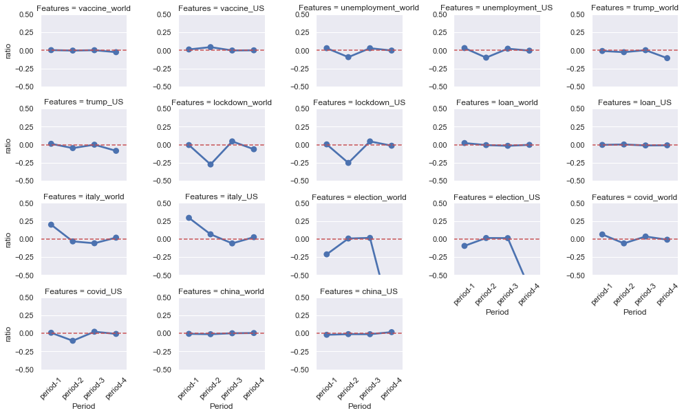

OK Google,
google the NASDAQ
COVID-19, the most significant "black swan incident" in 2020, seemed to add huge uncertainties to the stock market. Between 20 February 2020 and ended on 7 April , the global stock market experienced the fastest fall in financial history and the most devastating crash since the Wall Street Crash of 1929. NASDAQ composite index (^IXIC), one kind of critical stock indexes in the US stock market, was no exception:
There are countless factors influencing the stock market. It’s impossible to study them exhaustively. Here we try to study several aspects including Google Trends and COVID-19 situation.
Google Trends vs. Stock Market
Google Trends provides a time series index of the volume of queries users enter into Google in a given geographic data. Depending on the time range, the data was normalized to [0,100]. Google trends data are available. Furthermore, the search queries were classified into 25 categories on the top level, 274 on the second level, and 629 on the third level, providing an abundant database for us to analyze what people are concerning during a certain time period.
So which topics are good indicators of the NASDAQ index? By intuiation, the queries about the index itself, the stock market, and words like "recession" seem to be strongly related to the situation of the stock market. Let's plot the Google Trends about Recession , Stock Market , and NASDAQ in recent 5 years.
The three main peaks in Stock Market and NASDAQ were on Nov 2016, Feb 2018, and Mar 2020, each time period correpsonding to impacting news about the stock market. On Nov 2016, Donald Trump gave his vitory speech, raising hopes in the markets while on Feb 2018 and Mar 2020, the market plunged. We can see that these Google Trends do refelct people's concern on the stock market. But the question is, are they good predictors of the NASDAQ index?
Naive Regression Analysis on Past 5 Years
We build naive auto regression (AR) models on the close value of NASDAQ composite index in recent 5 years. The baseline model contains only the one-step-ahead value as the predictor. Then we add the one-step-ahead values of the aformentioned 3 Google Trends repectively to see if the performance could be improved. The results are summarized in the table below
| Model | R-square | NASDAQ.l1 | Trends.l1 | ||||
|---|---|---|---|---|---|---|---|
| coef | t | p(>|t|) | coef | t | p(>|t|) | ||
| Baseline | 0.986 | 1.01 | 133.36 | 0.000 | - | - | - |
| NASDAQ | 0.987 | 1.04 | 95.08 | 0.000 | -5.93 | -4.36 | 0.000 |
| Stock Market | 0.987 | 1.02 | 133.56 | 0.000 | -6.45 | -4.89 | 0.000 |
| Recession | 0.987 | 1.01 | 136.20 | 0.000 | -6.29 | -4.11 | 0.000 |
Take a close at the baseline model, we couls see that the coefficient of the lagged term is very close to 1, which indicates a random-walk behavior of the NASDAQ index. This is consistent with the observation and discussion made in [1] .
As Nelson and Plosser (1982) and many subsequent authors have pointed out, it is very common for macroeconomic data to be represented as a random walk. For a random walk, the best univariate forecast for yt is simply yt-1.
Despite the random-work behavior, we could observe that in the long run (in our case, 5 years), only Google Trends data about NASDAQ, Stock market, and Recession all can bring tiny improvement to the models separately with convincing p-value.
Next, we'll take a look at out-of-sample forecasting. Data from 1st Dec 2015 to the one-step ahead time is used to train the model based on which the close value of NASDAQ index was predicted. The plot below demonstrates the actual NASDAQ index along with the out-of-sample predictions from both baseline model and trends models.
Eh...because NASDAQ index basically follows the random walk pattern as we said before, we can hardly tell distinct differences among these plots. So, we calculated the mean absolute error (MAE) for more insights:
| Trends Topic | MAE | Improvement |
|---|---|---|
| NASDAQ | 158.024 | 2.40% |
| Stock Market | 157.678 | 2.61% |
| Recession | 162.348 | -0.27% |
The table shows that Google Trends data about "Stock market" and "NASDAQ" both gain about 2% improvement compared to baseline model. This means it's feasible to do a better prediction for NASDAQ with the help of Google Trends.
What happened in 2020?
From previous analysis we've known that Google Trends data could improve predictions of NASDAQ index in spite of its random-walk habit. But more detailed discovers are still waiting. For example, in 2020, a special but weird year, which trends affects the NASDAQ most? Does COVID-19 appeal to the finance people?
So in this part, we collect more Google Trends in 2020. It' hard to figure out wheter they are related to NASDAQ in a intuiative way. Let's play with these trends on the NASDAQ close value in 2020 using AR model.
Let's make a hodgepodge of Google Trends:
Since the time range and resolution have been changed, we first look at the baseline model and a "hodgepodge" model including all the Google Trends data we've collected and the lagging term 'NASDAQ.l1'. The R2 values of these two models are 0.987 and 0.988, respectively. Though slightly improving the R2, the "hodgepodge" model can be bad at prediction. Larger coefficient probably means it has some outliers that may influence the NASDAQ a lot. Just out of out of curiosity, we can't wait to see which trends data has such magic.
It's election, a event that only lasted for several weeks but left an indelible impact on the NASDAQ index. Note that close.l1 in the plot represents the closing prices of NASDAQ index in the previous day. It's always closed to 1.0 no matter how many trends categories we use.
OK, let's go back to the main topic in out-of-sample forecasting to explore which the best predictor is.
Which trend is the best predictor in 2020?
Similar to what we've done to the 5-year data, we calculate the MAEs of the out-of-sample predictions made by AR models with only one lagging term and one Google Trends term as predictor and compare their improvements compared with the naive univariate AR-model
There you go. COVID-19, the most important event in the whole world, does have the most significant impact on the future trend of NASDAQ index in 2020.
But wait, as stock market is vulnerable to special event, it might not be enough to draw a conclusion just with analysis in the whole year.
How about the turning points?
Turning points are also valuable study subjects. Researchers in economics always hope to find vital elements in such turning periods to prepare the dramatic changes in the future. Here, we choose 4 turining points to dive in.
For each turning period we calculate and compare the MAE improvements
Period 1: 2020-02-10 ~ 2020-02-25
This period could be recognized as the onset of the worldwide COVID-19 pandemic. During this period, Google Trends topic Italy shows the largest improvement of MAE. At the same time, Google Trends on the topic Italy showed its fisrt peak in 2020, which might be related to the rapidly increasing COVID-19 cases reported in Italy.
Period 2: 2020-03-10 ~ 2020-03-30
This is a tragic period where the US stock market unprecedentedly fused 4 times in 10 days due to its plunge. During this period, Italy also shows the largest improvement. Interestingly, the US presidential election also improved the MAE. Referring to the Google Trends data on the election, we could see a small peak in that period.
Period 3: 2020-08-20 ~ 2020-09-15
During this period, lockdown produced the largest increase of MAE but this is hard to explain because there were no obvious change on the Trends about lockdown during this period.
Period 4: 2020-10-10 ~ 2020-11-10
This period is marked by the US president election. It seems that no trends significantly increased the MAE, however, the election produced the largest decrease of MAE, which might indicate that the public concern on election itself is not a good predictor for NASDAQ index because because it might bring to the stock market both optimisim and pessimism which might be switching frequently as the election went on.
Overall Comparison
After investigating each period, let's the performance of all the trends during all the tunring periods together:
We can see that only queries related with Italy, no matter in the US or the world, show significant improvement of MAE during the first turning point though there exists relatively small improvements of MAE during the 4 periods. Also the Trends on election dramatically reduces the MAE in the election period
Which Trends are actually behind the NASDAQ?
We've already made some breakthrough in the mysterious stock market world, however not enough! Stay hungry!!! Let's dive into the whole and exciting deep sea of google trends and make a thorough exploration to see what happened indeed!
Since the real world is complicated and full of uncertainties, how can we normal people know what kind of things are actually connected with stock market apart from just by guessing with our few life experiences. One of the answer is again Google trends! Google actually divides Google Trends data into hundreds of categories and 3 hierarchical levels which can be easily preprocessed. With Google Trends data in all categories, we are able to analyze our model performance in all different levels.
Analysis for all topics
We apply the same method as before to compare ratio of improvement of MAE, but this time, all topics in life! To our surprise, a large proportion of topics having good performances are about entertainment and leisure in life. Top 1 topic is "Concerts & Music Festivals" which improves our base model by 5.6%! One can immediately find the result is not by chance, Think about what happened in 2020, it's reasonable to argue that during the epidemic period, people miss social and outdoor activities and are very eager to find more brand new ways to entertain themselves.Their desire for past collective life causes changes to their behavior which has an indirect impact on stock price.
Relation between different levels
Let's make our analysis more hierarchical and clear. We organize and sort all topics according to their corresponding level. First, we want to know if the broadness of a topic has influnce on inprovement. The answer is yes. Note that level 1 is the top level and level 3 is the bottom level. From the distribution of improvement, We find that the more detailed a topic is, the more likely it is to improve our model by a lot.
Next. we want to find out whether a topic will have better performance as long as it contains a larger proportion of subcategories that are also good predictors. However only level 2 and level 3 conform to this law, namely the "improvement ratios" are positively correlated with "positive ratios".
Finally, after we inspect all the three levels, topics about leisure and healthcare almost dominate the other ones. For example, Aging & Geriatrics has a high rank which makes sense because the old and weak are more likely to get infected by corona and need more attention and care.
Best predictors top 30
Conclusion
- NASDAQ index shows a random-walk behavior
- The AR model for predicting NASDAQ index could be improved (in terms of both in-sample R2 and out-of-sample MAE) by Google Trends on "NASDAQ" and "Stock Market"
- Among the 9 Google Trends in 2020, "COVID-19" improved the MAE the most among the year while Google Trends on "Italy" showed the greatest improvements at the first two turning points of NASDAQ index. However, Google Trends on "Election" increases the MAE significantly during the election period
- Leisure, Healthcare, Politics are three good indicators of Stock in this unprecedented year which is in fact a strong sketching of what we most care about in 2020.
Reference
[1] Choi, Hyunyoung, and Hal Varian. "Predicting the present with Google Trends." Economic record 88 (2012): 2-9.